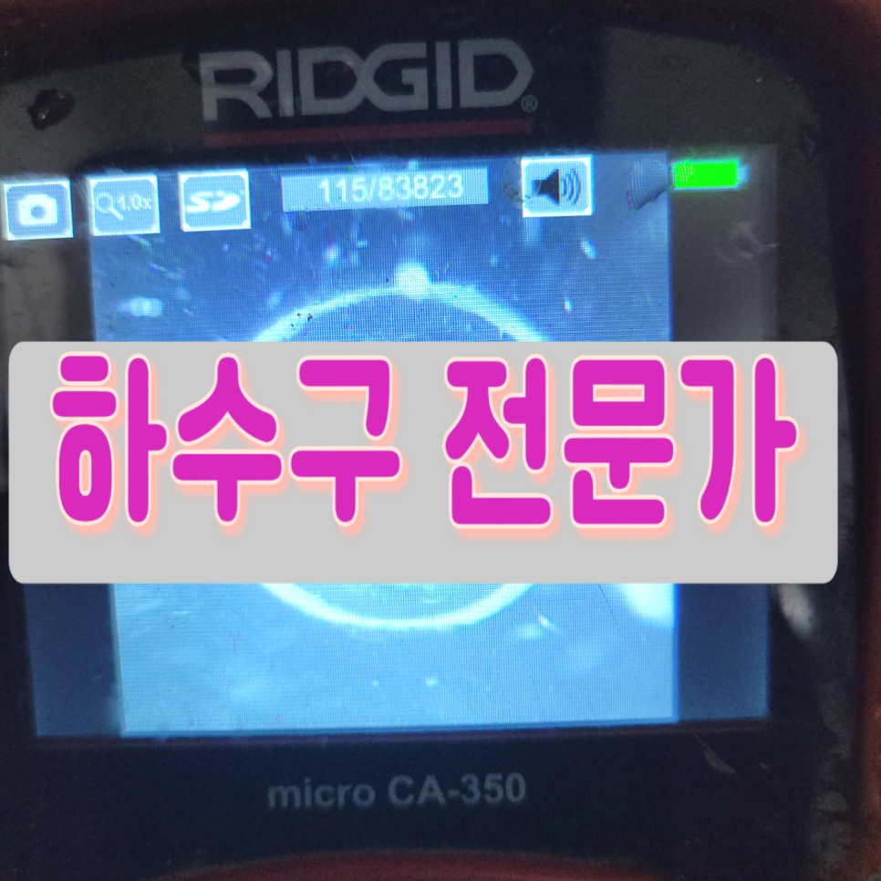
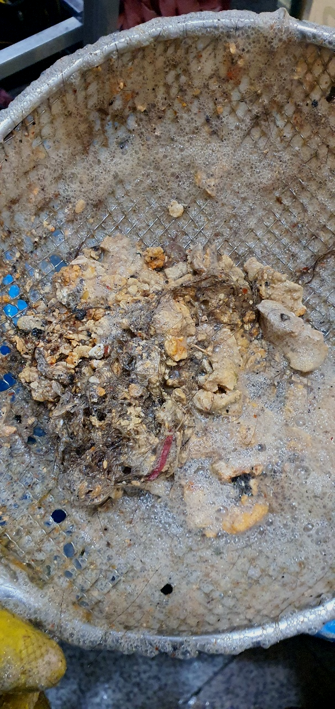
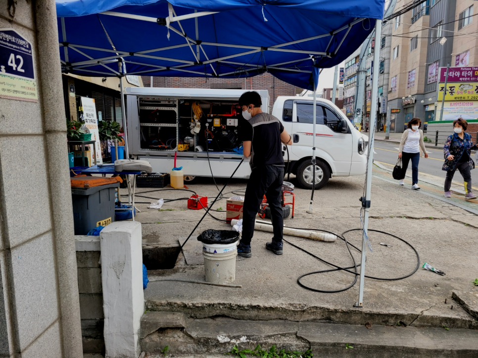
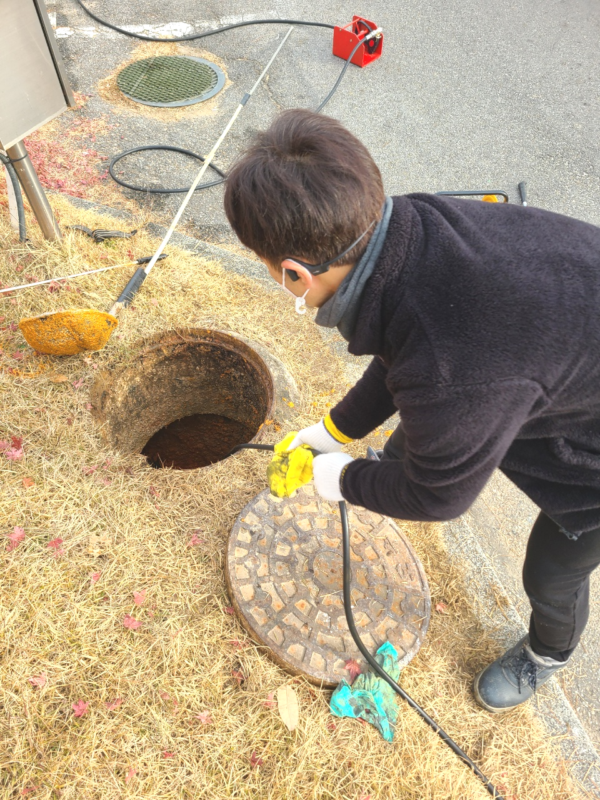
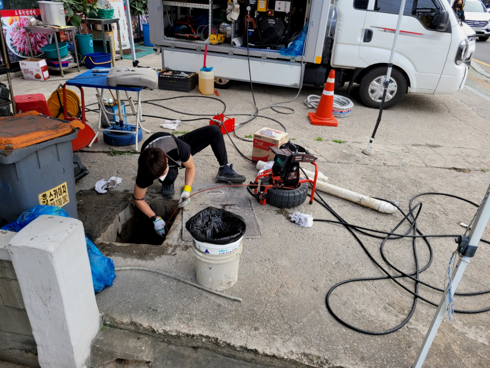
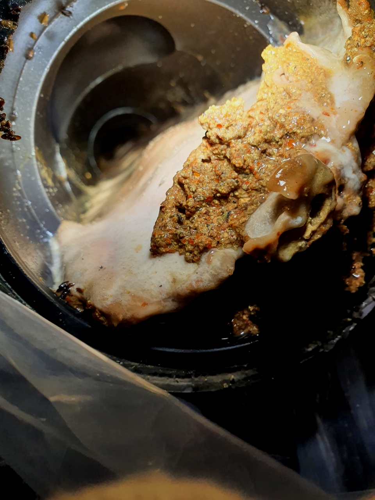
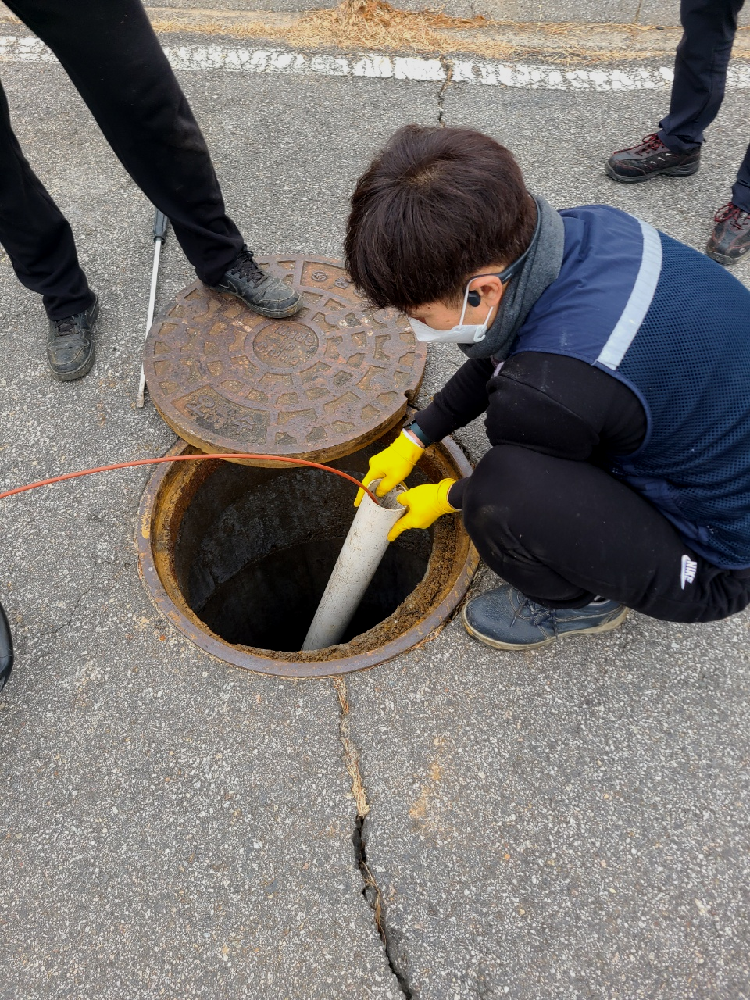

🏠 화성 향남하수구 고압세척 배관 기름청소 공장배관 고압청소
화성 향남 싱크대막힘 전문 시공 후기

📋 작업 개요
- 위치: 화성 향남, 향남, 화성
- 서비스 유형: 싱크대막힘, 변기막힘, 하수구막힘, 배관막힘, 역류해결, 뚫는업체, 배관청소, 고압세척
- 작업 일시: 2023. 11. 5. 21:55
- 업체명: 하수구수사대 (010-5615-2118)
🔍 문제 상황
반갑습니다!
설비전문업체 "하수구수사대"를 찾아주셔서 감사드립니다.
모든 사람들이 살아가는 공간과 환경은 비슷비슷하겠지만 하수도배관의 위치나 모양,크기는 모두 다른 모습을 보이고 있습니다.
조급한 나머지 무조건 행동을 취하고 다양한 업체를 찾아보고 이러다 보면 시간이 더 지연되어 상태가 좋아지기보다 악화되는 경우도 생깁니다.퇴수구 이럴때는 고민만하지 마시고 전문가에게 곧바로 문의하시길 추천드려요.
화성 향남하수구 고압세척 배관 기름청소 공장배관 고압청소

🔎 원인 분석
💡 전문가 진단: 화성 향남하수구 고압세척 배관 기름청소 공장배관 고압청소
막힌 것 자체가 스케일이 크기 때문에 오래 걸리더라도 실속 있는 업체에 의뢰 작업해야지라고 고려하시는 분들도 많습니다. 실력부분이 신중한 포인트라고 할지라도 늦기 전에 하수뚫지 않으신다면 모든 피해를 여러분이 짊어지게 되므로 빨리 해결해야합니다.
그래서 어떠한 물질이 배수구를 막고 있는지를 내시경 카메라를 통해서 확인을 하는 것이 필요합니다. 막혀있는 물질이 무엇이냐에 따라서 작업의 방향이 결정이 되고 또한 어떠한 장비를 사용해야 할지를 판단할 수 있습니다.
하수도 뚫기 위해 내시경을 투입해서 보니 엮인 배관으로 이어진 곳에 침전물들이 누적되어 있는 것을 확인시켜드렸어요. 통로 깊숙이 들어가 있기에 막인 것을 알아차리는데 꽤나 어려움이 있었을 듯해요.
믿고 부른 배관업체가 제대로 뚫었다면서 철수했는데 얼마 지나지 않아서 똑같은 증상이 재발했다는 경우도 어렵지 않게 봅니다. 양심적인 업체였다면 이럴 때 당연히 다시 가서 뚫어주어야만 하는 것입니다.
갑작스럽게 배관 때문에 당황스러운 것이 당연한데 설거지 도중에 통수가 되지 않고 멈춰 있기도 해요. 전조증상을 미리 알지 못했던 탓에 이도 저도 못하는 상황까지 오게 되죠. 배관 내부는 오랜 기간에 걸쳐 막히기 시작했을 텐데 대개는 잘못된 습관 때문에 이 같은 상황이 벌어져요.
그럴 때는 관 속에 있는 이물질을 직접 제거를 하고 퇴수구배관이 오래된 경우에는 연결 부위에 있는 고무패킹까지도 교체를 해주어야 하는 상황이 생기기도 합니다. 이번 현장에서처럼 보통 퇴수구막힘이 있는 경우는 원인이 무엇인지를 파악을 하는 일이 가장 중요하다고 할 수 있습니다.

🔧 작업 과정
한번의 고압세척만으로도 일반 가정집 경우 몇년간은 시원한 화성 향남 하수구막힘뚫음으로 막힘 걱정없이 안전하고 쾌적한 생활이 가능하십니다.
배출관막힘의 원인이 어떤 것인지를 먼저 파악하고 해결을 하는 것이 필요하다고 할 수 있습니다. 배출관내시경으로 내부를 보니 이미 많은 이물질들로 인해서 역류까지 발생을 하게 된 것이었습니다.
실제로 하수도석션 작업까지 마치고 나서 내시경 검수를 진행해보니 초기에 빨갛게 나오던 내시경 화면이 푸르게 변한 것을 알 수가 있었는데요.
견적비용을 솔직하게 말할수있는전문업체들을 찾아야하는데요.합리적인비용을 알려드리기에 생기게되는무조건 퇴수 뚫을수있다는생각과 긍지를가지고 제대로된해결법을 얻을거에요
경력없는사람이아닌 일정수준의 경력이있는사람들로만 뭉쳐있으며 같은기술력과 하수기사님들은 출중한기술로 문의가오자마자 60분안에 도착보장해드리고있답니다.
분쇄장비는 빠르게회전해서 벽에딱붙어있는 이물질들을 부셔주는데요.강력하게회전하는 기계이기때문에 잘못사용하면 배수관가 손상되는경우도 있으므로 조심해야돼요.이전에 작업한곳은 해결할수있다고해서 의뢰했으나 대강해결만한후 배수관들을엉망진창으로 만들고서는 그냥철수해서 수습할수없는 상태였습니다.
가지고있는 배출구전문장비에관해서도 지나칠수없죠.배관청소를 진행할때는 기본적인 기계를써서 짧은시간안에 처리할수있습니다.저희업체는 어떤현장을가도 배관cctv로안을 본다음 육안으로 확인이안됐던부분까지 처리해드리고있습니다.
저희는 내시경 카메라를 비롯하여 고압세척기, 석션기, 플렉스 샤프트 등 다양한 전문 장비를 갖추고 있으며 해당 배출관장비를 능숙하게 활용할 수 있는 인력들도 충분히 있다는 점 다시 한번 말씀드립니다!


✅ 작업 완료
배출구배관들은 온갖 사유로 장애가 발생하는데 어떤 배출구막힘들도 마주해보고 고쳐본 적이 없다면 예기치 못한 증상에는 대처 불가능하기에 못 뚫어 버릴 수도 있습니다. 입증 가능할 만한 실력 보유자만 뭉쳐있는 까닭 중의 하나입니다.
어떤 현장이든 만족스러운 결과물을 고객님들에게 최대한 보여드리기 위해서 최신장비를 총동원하여 해결해 드리니 걱정마시고 언제든지 연락주시기 바랍니다.
#하수구막힘 #하수구뚫음 #하수구역류 #씽크대막힘 #싱크대역류 #오수관막힘 #하수구청소 #욕실하수구막힘 #변기막힘 #하수구뚫는비용 #싱크대수리 #화장실막힘




⚠️ 주방 싱크대 배관 막힘 예방 수칙
- ✅ 기름기가 묻은 식기나 프라이팬은 설거지 전 키친타올로 반드시 기름때를 닦아내세요.
- ✅ 주기적으로 싱크대 개수대에 뜨거운 물을 가득 받아 한 번에 내려 배관 내부 기름을 씻어내세요.
- ✅ 배수구 거름망을 미세한 필터로 사용하시고 음식물 찌꺼기가 틈으로 새어 들지 않게 관리하세요.
- ✅ 베이킹소다와 식초를 뜨거운 물과 함께 일주일에 한 번씩 부어주면 배관 살균과 막힘 예방에 좋습니다.
💡 핵심 정리
- 확실한 장비 작업(내시경 점검 및 샤프트 스케일링)으로 원인을 뿌리 뽑습니다.
- 작업 후 1년 이내에 동일한 부위 재발 시 100% 무상 A/S 서비스를 보장합니다.
- 서울 · 경기 · 인천 전 지역에 24시간 언제든 긴급 출동할 수 있도록 항시 대기 중입니다.
❓ 자주 묻는 질문 (FAQ)
🚨 화성 향남 싱크대막힘 문제로 고민이신가요?
정확한 원인 진단과 확실한 시공으로 재발 없는 해결을 약속드립니다.
24시간 긴급 출동 | 서울 · 경기 · 인천 전지역 | 1년 내 재발 시 무상 A/S